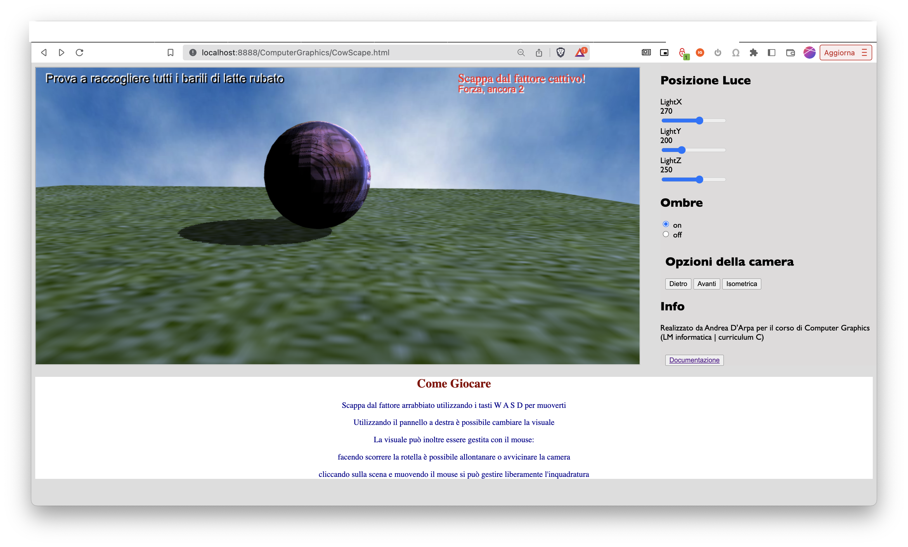

La mucca Carolina si è stancata di dare tutto il suo latte al mandriano Andrea, e vuole recuperarlo.
Aiuta Carolina a riprendere il suo prezioso latte rubato, ma fai attenzione al cattivo allevatore!
Se ti prende, diventerai una braciola!
Il gioco ha come scopo quello di raccogliere i barili di latte sparsi nella mappa, scappando dalla sfera che rappresenta l'allevatore. Ma attenzione! Se esci dalla mappa, farai una brutta fine!
Per la realizzazione della scena, sono state utilizzate diverse tecniche.
La skybox è stata realizzata tramite un cubo a cui sono state applicate delle texture e una visione prospettica che hanno lo scopo di restituire la sensazione di un mondo infinito.
L’ambiente è stato poi reso “vivo” creando un piano con l’applicazione della texture di un prato cercando di rendere l’idea di un ambiente aperto.
La dimensione di piano e mappa coincidono, infatti l’uscita dal piano corrisponde alla schermata di “game over” che permette al giocatore di riprovare con l’ausilio di un bottone di “retry”.
La scena è composta da diverse Mesh che vengono importate da altrettanti file in formato Wavefront OBJ.
La mesh della mucca era molto complessa (reperita dal sito free3d.com) e per permettere il caricamento sull’applicazione, ho ridotto il numero di poligoni con l’ausilio del software Blender.
Il secondo oggetto è il “barile”, un semplice cilindro realizzato con Blender, a cui poi è stata applicata una texture per far in modo che questo risalti rispetto al resto della scena e sia ben visibile.
Per importare le mesh nella scena viene utilizzata la funzione loadObj presente nel file utils.
Ad ogni oggetto presente nella scena è stata applicata una texture.
Per l’implementazione delle texture sono partito dal codice di esempio fornito a lezione.
Le texture sono state create con l’ausilio delle funzioni “gl.createTexture()” e “gl.texImage2D()” fornite da Web-GL, che se possibile applica alle immagini la tecnica del “mipmap”. In caso contrario, vengono impostati dei parametri predefiniti per la sua gestione.
Il “nemico” in fine è stato realizzato applicando all’oggetto sfera una mia foto come texture (come richiesto dalla consegna).
Ho cercato di ricreare una luce quanto più naturale possibile, ponendo una fonte di luce al di sopra della scena. La luce è direzionale e sfrutta una depth_texture che utilizzando le coordinate di profondità riesce a calcolare quali oggetti sono in ombra (e da che lato).
L’utente può modificare la posizione della fonte di luce rispetto ai suoi assi.
Ho stabilito un bias atto a limitare l’effetto di pixelatura delle ombre noto come “shadow acne”
L’utente ha anche la possibilità di non renderizzare le ombre, in modo da alleggerire il carico di lavoro della macchina in caso si voglia eseguire il gioco su computer meno performanti.
Il problema della scelta di illuminare la scena tramite questa tecnica è nelle ombre che risultano leggermente pixelate (nonostante il bias molto basso).
Questo è dovuto al basso numero di poligoni degli oggetti che risultano dunque ancor meno smussati con le ombre attive.
Per migliorare l’effetto visivo, si potrebbe alzare il numero di poligoni o (in alternativa) si potrebbe implementare un algoritmo performante di shading in grado di raffinare la forma delle ombre.
Il movimento della mucca all’interno della scena è stato gestito partendo dal file cg-car2.js visto durante il corso.
La fisica utilizzata per il movimento è una versione semplificata della funzione di animazione della macchina, senza dover però gestire le ruote.
Il movimento all’interno della mappa è caratterizzato da alcune collisioni.
Utilizzando la posizione del personaggio che si sta controllando si può determinare se si è entrati in collisione con il nemico che ci insegue o meno.
La posizione del personaggio giocabile è stata inoltre sfruttata per creare l’algoritmo di inseguimento usato dal nemico, che controllando la posizione della mucca sugli assi x e z, aggiorna la sua direzione sugli assi, andando a modificare la posizione del nemico ad ogni frame.
Sono state implementi due tipi collissioni:
Quando il nemico ti prende, il gioco va in uno stato di game over, e tramite lo spawn dell’apposita schermata è possibile riniziare la partita.
La collisione con i barili invece, porta allo scomparire di questi ultimi. Una volta raccolti tutti, tramite degli appositi controlli, si determina la vittoria del giocatore. Anche in questo caso viene mostrata a schermo una vista che comunica al giocatore il suo successo e viene data la possibilità a questo di ricominciare.
I barili nella scena ruotano attorno all’asse y e all’asse x con una funzione fornita dalla libreria “m4.js”:
“m4.yRotate(m, angleInRadians, dst)”
“m4.xRotate(m, angleInRadians, dst)”
Si distinguono due tipi di interazioni:
Le interazioni di gioco sono possibili
Eseguendo il programma su computer, per muovere la mucca è necessario utilizzare i tasti W,A,S,D (convenzione generale utilizzata nei giochi che sfruttano mouse e tastiera come fonte di input)
La camera può essere gestita tramite frecce direzionali e tramite il mouse. Usando inoltre la rotella del mouse si può allontanare o avvicinare la camera al personaggio.
L’interfaccia presenta un pannello sulla destra con vari bottoni e sliders. Questi permettono di posizionare la camera in tre modalità distinte:
- Posteriore
- Frontale
- Isometrica
Gli slider forniscono la possibilità (come già detto in precedenza) di spostare la sorgente della luce sugli assi x, z e y.
Ovviamente, l’uso di questa funzione risulta più di impatto con le ombre abilitate. È infatti possibile selezionare se visualizzare o meno.
Per permettere all’utente di usare l’applicazione anche da smartphone, sono stati inseriti sulla scena delle immagini (prese da google immagini) rappresentanti il layout dei tasti “WASD” e “arrowUp, arrowLeft, arrowDown, arrowRight” sulla tastiera.
Sono stati poi posizionati sul canvas rispettivamente sulla sinistra e sulla destra, pensando a simulare un controller, dove con il pollice destro muoviamo il personaggio e con il sinistro gestiamo la camera.
La particolarità del software risiede nella meccanica di inseguimento proposta. Infatti il gioco risulta ben bilanciato con la velocità del nemico rispetto alla propria, ritrovandosi in più occasioni a ritrovarsi con la strada tagliata dal nemico, risultando in un game over.
La posizione dei barili, così come lo spawn del nemico vengono generati casualmente ad ogni inizio della partita.
Per migliorare il software in futuro si potrebbero implementare le seguenti feature: